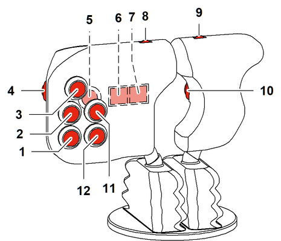

ID_b84a2f02b39b4ae0a0811da5de806d10-3a393b404bd202ef0a1e9aa50e7a03d2-de-DE.html
true
Rechter Doppel-T-Bedienhebel

Funktionsbelegung der Bedienhebel bei einer Maschine mit einem Kreuz-Bedienhebel und einem Doppel-T-Bedienhebel

Fig. 1239: Funktionsbelegung der Tasten des rechten Doppel-T-Bedienhebels
Fig. 1239: Funktionsbelegung der Tasten des rechten Doppel-T-Bedienhebels